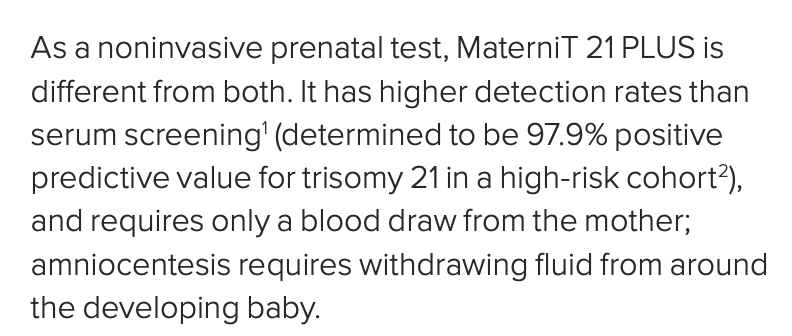
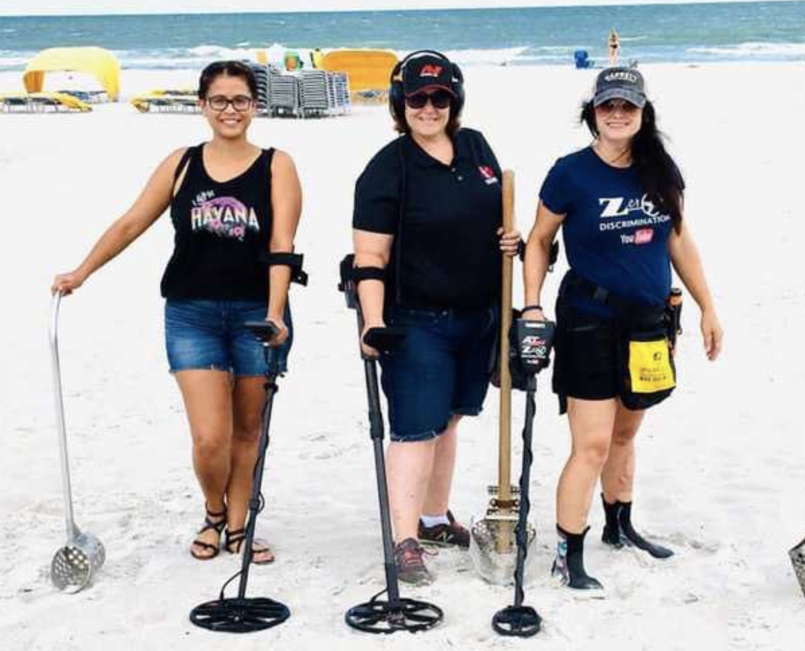
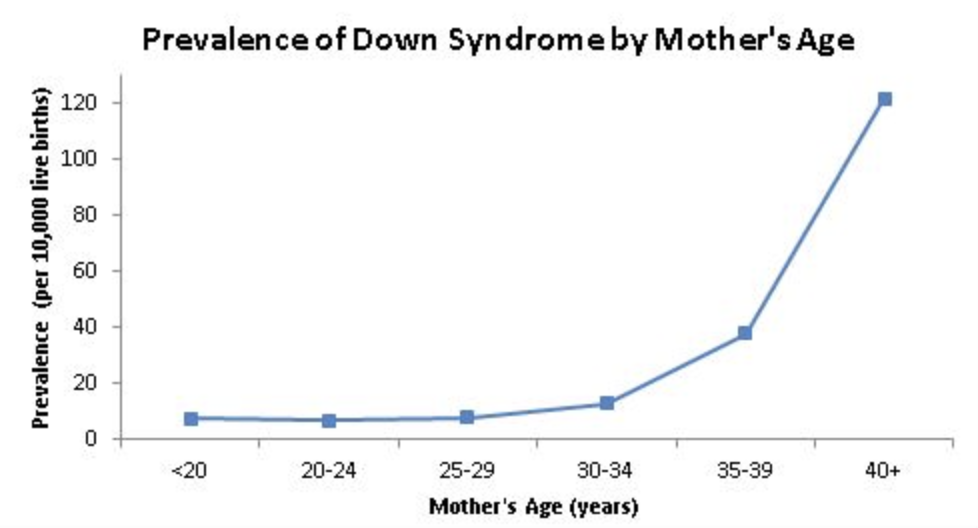
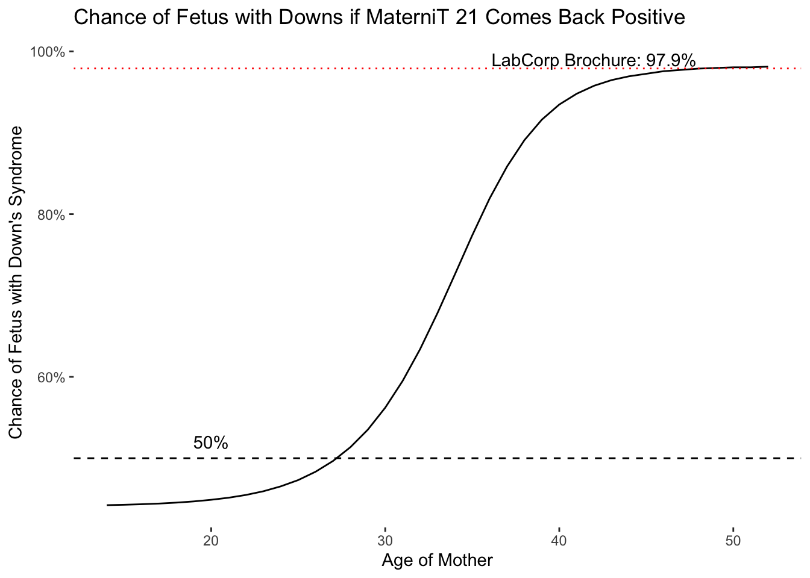

Interested in more fun writing on science? Check out my just-released novel, the Bayesian Hitman, about a statistician who takes on the Russian mafia.
My wife and I have been faced with a decision in our pregnancies that has always caused me some consternation: should we take the MaterniT 21 test to see if our baby might have Down’s syndrome (trisomy 21) or other genetic abnormalities? This test, marketed by the company LabCorp, offers a way to analyze the blood of a pregnant woman for DNA markers that could indicate genetic problems. While non-invasive, it isn’t cheap (at least in the United States), and if it returns a positive result, it could be used for more invasive procedures like amniocentesis that could be harmful to the fetus.
So while it might seem like a good idea (let’s learn as much as we can), the test can only guide decisions if it’s reasonably accurate. However, due to corporate greed and manipulated statistics, people put way too much trust in the test when they probably shouldn’t. As a result, women and their partners may be led to make unwise decisions based on misplaced confidence in the test.
In this post I explain why you shouldn’t buy into the company’s marketing about the test’s accuracy–in fact, LabCorp is patently misleading consumers about how useful its test is for diagnosing Down’s syndrome in utero. It will take a bit of time to read through this post, so I’ll give the highlights first:
- For women under 30, even if they get a positive result from the MaterniT 21 test, it’s still more likely that the fetus does not have Down’s syndrome.
- Only for women over 40 does the test provide reasonably conclusive results.
- The misleading statistics put out by LabCorp might convince some women to do dangerous, invasive follow-on testing (or even an abortion) based on misplaced confidence in the test.
Investigating LabCorp
LabCorp (under its subsidiary Integrated Genetics) offers a brochure for the test on its website. This brochure mentions how accurate the test is in only one place:
While they don’t define what the technical terms are in the parentheses, 97.9% does sound pretty good. In another part of the brochure, the company says that “the test delivers clear positive or negative results.” I take this as enough evidence to say that LabCorp wants women to believe that the test will determine whether the fetus has Down’s syndrome with reasonable confidence, such as a greater than 90% probability.
Now for the fun part–I’m going to break down what is meant by the number cited in the brochure above and trace it back to the original research to see what it actually means. You may have noticed the footnote in the image above–that is a reference to an article published in 2014 that evaluated tests like MaterniT 21, known as cell-free DNA tests. A scan of the article’s results shows that LabCorp did indeed get the number right–97.9% for trisomy 21. They did not, of course, mention that the article found much lower rates of detection for other trisomies and genetic conditions, but for now we’ll ignore that oversight. The test is marketed as a way to detect Down’s syndrome, so let’s focus on just that as the test’s selling point.
As I was doing research, I found a more recent paper that did a meta-analysis, which is a compilation of the results of all previous research, in this case on tests like MaterniT 21. This paper is quite useful for evaluating the test as it aggregates information from many different researchers, lowering the concern that any one study was a fluke. It turns out that this meta-analysis has a number very close to what the brochure article cited – 99.2%, i.e., even higher.
At this point you may think, “your concerns about this test seem unfounded.” Ah, but we have not yet discussed what these numbers actually mean, which if you notice, the brochure did not provide any more information about. All it said was 97.9% positive-predictive value for a “high-risk cohort”.
My intuition is that relatively few readers of the brochure would have any idea what that refers to. Most people just want to know how accurate the test is, and 97.9% sounds really high, so it must be good. In reality, it is much harder to know how well a test works, because the usefulness of a test depends on how hard it is to find what the test detects.
Explaining this point is difficult, so I’ll use as an example that is easier to relate to. I’m sure you’ve come across the hand-held metal detectors of the kind that people like to use for treasure hunting on beaches (see picture below). Suppose you are a person who has taken up an interest in treasure hunting and you want to know how useful these metal detector will be in helping you find Blackbeard’s long-lost hoard.
What you really want to know is, if the thing beeps, does it mean you’ve found treasure? The answer to this question just so happens to be the same calculation as the “positive-predictive value” that the test company put in their brochure.

The detector can easily go wrong if it beeps when it comes across a worthless piece of scrap metal. On the other hand, the detector could also fail if it didn’t beep because a treasure hoard was buried too deep. The first case is called a false positive: the machine beeped but you didn’t find any treasure. The second case is called a false negative: you were standing on treasure and the machine didn’t help you out one bit.
So let’s get back to the brochure. The positive predictive value is equal to the chance that your metal detector’s beep means you hit pay dirt. But if you ask a metal detector salesperson what the chance is that you find treasure if the machine beeps, you might get some evasive answers/sarcastic smirks. He or she certainly won’t be able to tell you how likely it is that you find treasure, unless… the salesperson actually knows how much treasure there is in the sand (in which case you might wonder why they are still a salesperson). The point is, you can only calculate a positive predictive value for your detector if you know how likely it is you’ll be standing on treasure at any point along the beach. If treasure is impossibly rare–which it probably is, I hate to break it to you–you’ll be digging up a lot of empty sand or rusty beer cans even if the machine’s sensors are working fine.
The point of this whole analogy is that knowing what you should do if the machine beeps depends on how much treasure is in the sand. If you knew that you were standing right next to a sunken pirate ship, you would probably want to dig up every beep you hear. If you’re on the Jersey shore and the sand is littered with old Dr. Pepper cans and fish hooks, you might not want to dig up anything unless you need the exercise.
Now I can finally explain the test company’s deception. They provided a positive predictive value, which is what you want to know: what’s the chance the fetus has Down’s syndrome if the test comes back positive? But LabCorp pulled this number from a high-risk cohort. Doing so is no different than selling you a metal detector and telling you it’ll detect treasure 97% percent of the time so long as you’re standing on Blackbeard’s grave.
So where did this high-risk cohort come from? What is very important to know (and completely ignored by the test brochure) is the fact that the risk of Down’s syndrome increases dramatically with age. The chart below is from the CDC, and you can see that the rate of a live birth with Down’s syndrome increases very rapidly once a woman reaches 40 years of age.

Now let’s go back to the papers they cited as proof of the positive predictive value. I’ll only focus on the meta-analysis as it represents a lot of combined research. Unfortunately, and to me somewhat surprisingly, the paper does not report the median age of women in the study. However, because we know the actual number of women who had children with Down’s syndrome from the paper, we can figure out how old the women were by calculating the percentage who ended up having babies with Down’s. I calculate this in the code below based on a table of data in the article. The code is shown for transparency’s sake, and I include the full table at the end of this blog post as a reference.
journal_data <- readxl::read_xlsx("downs_table.xlsx")
print(paste0("Percentage of live births with Down's Syndrome in the meta-analysis study is: ",round(sum(journal_data$positives)/(sum(journal_data$positives) + sum(journal_data$negatives)),3)*100,"%"))[1] "Percentage of live births with Down's Syndrome in the meta-analysis study is: 4.6%"A rate of 4.6% of babies with Down’s syndrome means that the women in the study were probably 46 years old on average, according to data from the National Down Syndrome Society. By comparison, the CDC says that the rate of Down’s syndrome among newborns for the population as a whole is only 0.001%. The fetuses in the studies in this meta-analysis had a rate of Down’s syndrome 50 times higher than average. In other words, the testing company used the equivalent of a beach full of buried treasure to evaluate the usefulness of its metal detector.
At this point, you might start to feel suspicious about the articles I cited. Were the scientists running these studies in cahoots with the testing company? Probably not. Doing these kinds of studies is expensive–they have to enroll women, then test them, then evaluate their babies after delivery–and if they had an average set of women, they wouldn’t have very many fetuses that would ultimately turn out to have Down’s, requiring them to enroll many more subjects in the study. In a similar sense, if you were designing a metal detector, you might go out and test it by burying some gold coins in the beach and see if it works rather than stroll aimlessly around until you found treasure. So we shouldn’t necessarily blame the scientists, though we certainly should question the LabCorp’s intentionally deceptive use of the study’s statistics in selling the test.
We can get more useful positive predictive values by re-calculating the results from the article above and adjusting the Down’s syndrome prevalence to match younger women’s ages. I calculate this in the code block below and plot the positive predictive value by age:
journal_data <- mutate(journal_data,detection=as.numeric(stringr::str_extract(detection,"[0-9]+")),
fpr=as.numeric(stringr::str_extract(fpr,"[0-9]+")))
sensitivity <- sum(journal_data$positives)/(sum(journal_data$positives) + (sum(journal_data$positives) - sum(journal_data$detection)))
specificity <- sum(journal_data$negatives)/(sum(journal_data$negatives) + sum(journal_data$fpr))
# need Down's syndrome prevalence data by age
# Data taken from: https://journals.sagepub.com/doi/abs/10.1136/jms.9.1.2
# Using predicted values from model vs. observed values
# Morris, Dutton and Alberman (2002)
age_trends <- readxl::read_xlsx("downs_estimates.xlsx") %>% filter(age>13, age<53) %>%
mutate(pred_ods=as.numeric(stringr::str_remove(pred_ods,"1:")),
# convert odds to percentages
pred_ods=1/pred_ods,
# false positive rate
fp=(1 - pred_ods)*(1 - specificity),
ppv=pred_ods / (pred_ods + fp))
age_trends %>%
ggplot(aes(y=ppv,x=age)) +
geom_line() +
ggtitle("Chance of Fetus with Downs if MaterniT 21 Comes Back Positive") +
scale_y_continuous(labels=scales::percent) +
geom_hline(yintercept=0.5,linetype=2) +
geom_hline(yintercept=0.979,linetype=3,colour="red") +
theme(panel.background = element_blank()) +
ylab("Chance of Fetus with Down's Syndrome") +
xlab("Age of Mother") +
annotate("text",x=c(20,42),y=c(.52,.99),label=c("50%","LabCorp Brochure: 97.9%"))
As can be seen, the chance that a fetus has Down’s Syndrome if the test comes back positive–the positive predictive value–does not start to rise sharply until a woman is in her late 30s and 40s. Even in her early 30s, a positive test result only means there is a 50 percent chance that the fetus has Down’s Syndrome. I calculated these numbers from the meta-analysis that showed the test was pretty accurate, so the numbers could even be lower with the results of a different, less optimistic study.
You can see now that the test company’s positive predictive value of 97.9% only applies to women at the far end of the curve–around age 42 or 43 and higher. For the vast majority of women in child-bearing years, this number is simply inaccurate. Technically, the test company can claim they included the proviso “in a high-risk cohort”, but it seems very unlikely anyone would go as far as I did to know what that means. And it turns out, it means a lot. For women under 30, it’s still more likely than not that their fetus is free of Down’s even if the test comes back positive. If women and their partners were told, “even if the test comes back positive, there’s still only a 40 percent chance the fetus has Down’s Syndrome”, I do wonder how many people would still choose to take it.
The real punch, though, is that this non-invasive test can be used as a reason to do a more dangerous, invasive test. One potential test a doctor might recommend next, amniocentesis, has a risk of miscarriage as high as 1 percent. Let’s suppose that a million women under 30 take this test. According to my analysis above, there would probably be 832 false positive results (test results that came back positive but the fetus does not have Down’s Syndrome). If everyone went on to do amniocentesis to confirm the diagnosis, that would result in 8 miscarriages of otherwise healthy pregnancies. Considering that there are about 4 million live births per year in the United States, and the average age of a woman giving birth is 27, these disturbing numbers are quite plausible.
While it would seem that most people (and their doctors) would choose more invasive testing to confirm Down’s before reaching conclusions, it still strikes me as entirely plausible that someone would consider aborting the fetus based on the first, non-invasive positive result. That particular possibility frightens me, that someone might take the first relatively inaccurate test as a reason to terminate a pregnancy.
For all these reasons, do share this research with others. It’s important to know what tests really do, and also to pressure Congress and regulators to force test providers to release clear and non-misleading statistics. It should be as easy for them to compile a chart like the one I did above. In fact, these kinds of plots should be included in all scholarly research on tests to avoid people mis-characterizing results.
Down’s Syndrome Data Table
This table derived from Table 2 in Gil, Quezada, Revello, Akolekar, and Nicolaides (2015).
| Study | Method | GA | True Positives | Detected | True Negatives | False Positives |
|---|---|---|---|---|---|---|
| Chiu (2011)41 | MPSS | 13 (—) | 86 | 86 | 146 | 3 |
| Ehrich (2011)42 | MPSS | 16 (8–36) | 39 | 39 | 410 | 1 |
| Palomaki (2011)43 | MPSS | 15 (8–21) | 212 | 209 | 1471 | 3 |
| Sehnert (2011)44 | MPSS | 15 (10–28) | 13 | 13 | 34 | 0 |
| Ashoor (2012)45 | CSS | 12 (11–13) | 50 | 50 | 347 | 0 |
| Bianchi (2012)46 | MPSS | 15 (10–23) | 89 | 89 | 404 | 0 |
| Jiang (2012)48 | MPSS | — (10–34) | 16 | 16 | 887 | 0 |
| Lau (2012)49 | MPSS | 12 (11–28) | 11 | 11 | 97 | 0 |
| Nicolaides (2012)50 | CSS | 12 (11–13) | 8 | 8 | 1941 | 0 |
| Norton (2012)51 | CSS | 16 (10–38) | 81 | 81 | 2888 | 1 |
| Sparks (2012)53 | CSS | 18 (11–36) | 36 | 36 | 131 | 0 |
| Guex (2013)55 | MPSS | 12 (11–13) | 30 | 30 | 146 | 0 |
| Liang (2013)57 | MPSS | 21 (11–39) | 39 | 39 | 367 | 0 |
| Nicolaides (2013)59 | SNP | 13 (11–13) | 25 | 25 | 204 | 0 |
| Song (2013)61 | MPSS | 16 (11–21) | 8 | 8 | 1733 | 0 |
| Verweij (2013)62 | CSS | 14 (10–28) | 18 | 17 | 486 | 0 |
| Bianchi (2014)63 | MPSS | 17 (8–39) | 5 | 5 | 1947 | 6 |
| Comas (2014)64 | CSS/SNP | 14 (9–23) | 4 | 4 | 311 | 0 |
| Pergament (2014)71 | SNP | 14 (7–40) | 58 | 58 | 905 | 0 |
| Porreco (2014)72 | MPSS | 17 (9–37) | 137 | 137 | 3185 | 3 |
| Shaw (2014)73 | MPSS | > 12 | 11 | 11 | 184 | 0 |
| Stumm (2014)74 | MPSS | 15 (11–32) | 41 | 40 | 430 | 0 |
| Quezada (2015)75 | CSS | 10 (10–11) | 32 | 32 | 2753 | 1 |
| Song (2015)76 | MPSS | 9 (8–12) | 2 | 2 | 201 | 0 |